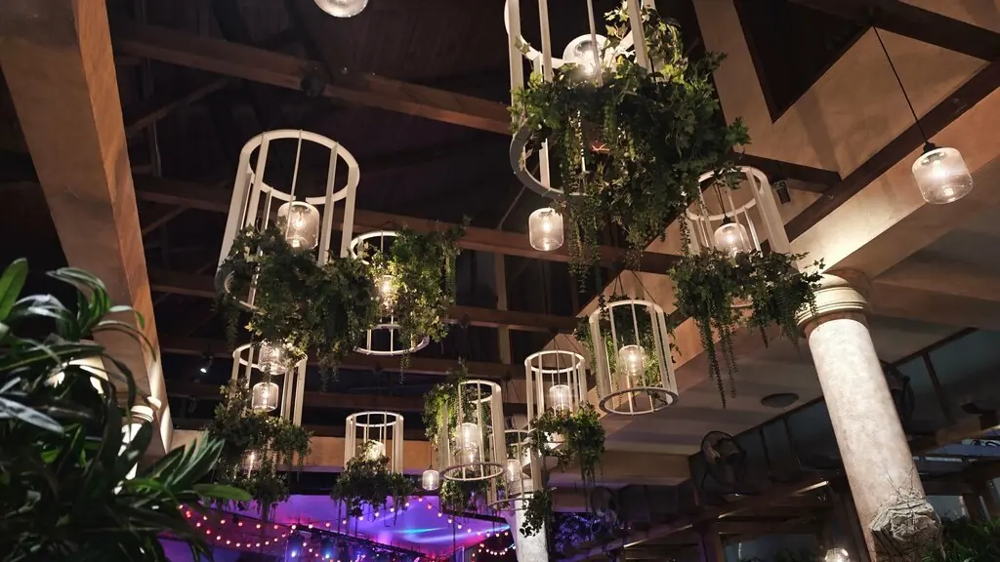
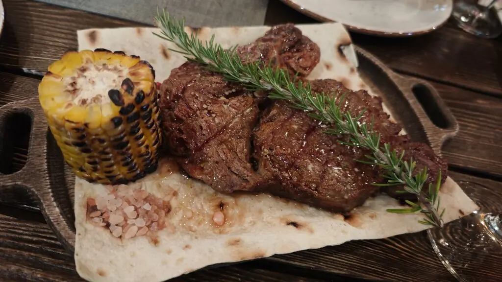
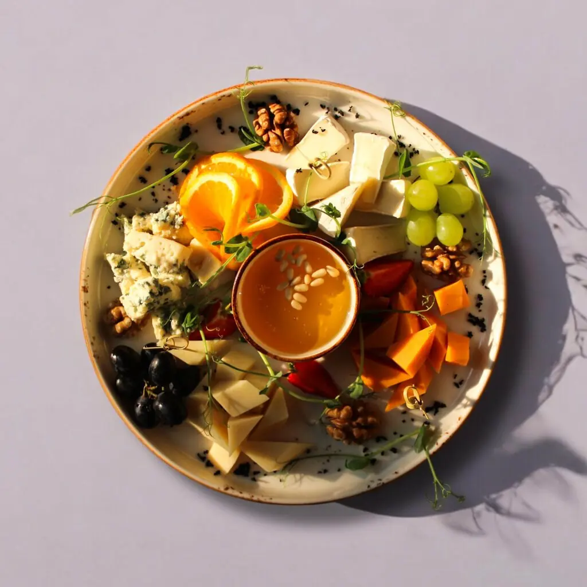
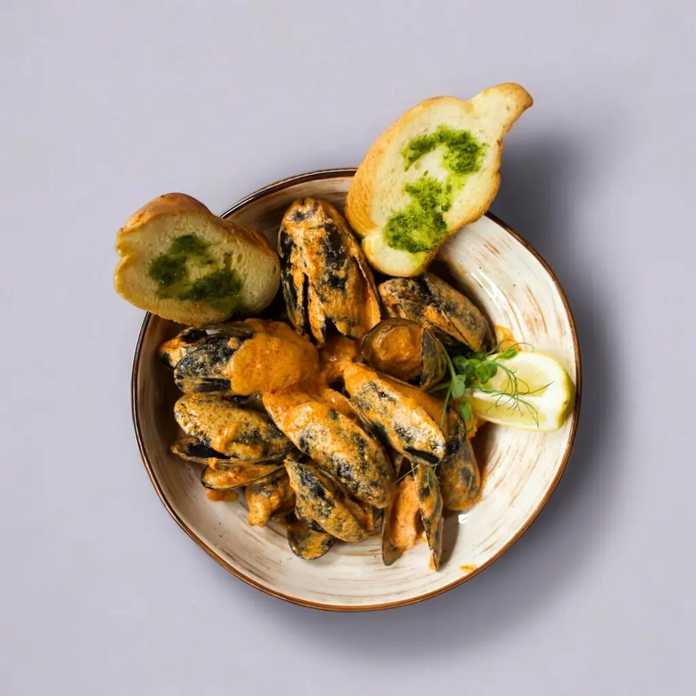
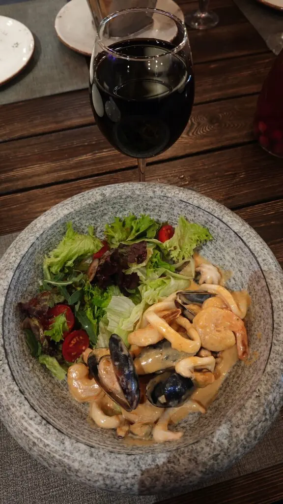

Сочи+7 988 237-78-37
Райский уголок
Ночной сад с фонарями-клетками, живая музыка по вечерам и места на 200 гостей. Отсюда не хочется уходить, и никто не выгоняет до двух ночи.
5,0 · 1957 оценок
Три дорожки сада
Плоды сада
Бурратта на ароматной лепёшке850 ₽
Дорадо, запечённая в печи1 450 ₽
Сало собственного посола и копчения450 ₽
Плато европейских сыров950 ₽
Селёдка с молодым картофелем480 ₽
Паштет от шефа из куриной печени650 ₽
Часть меню с Яндекс Карт, цены уточняйте у официанта.




Голоса из сада
Очень классное место. По вечерам живая музыка. Еда вкусная, порции большие. Впервые попробовала компот домашний из фейхоа.Надежда
Потрясающее место. Невероятно вкусная еда. Внимательный персонал, уютно и красиво.Наталья Лианозова
Неожиданно приятное место! Замечательная кухня, атмосферный интерьер, живая музыка, адекватная цена.Наталья Чемринская